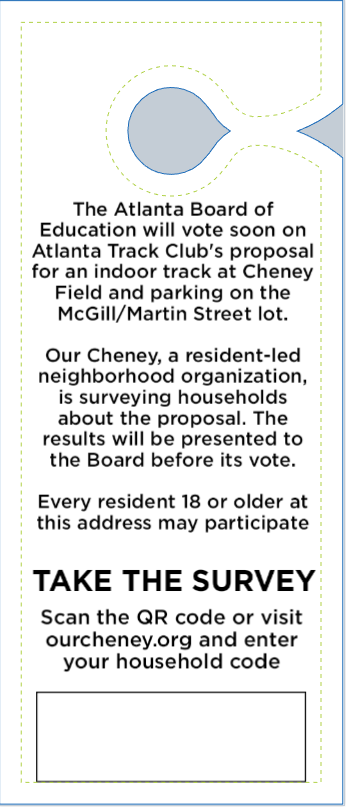
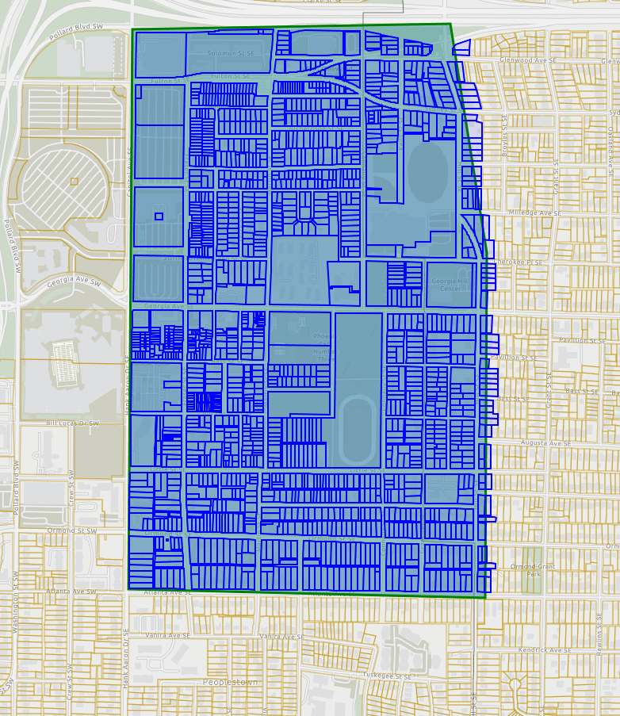

Neighborhood survey
We’re neighbors organizing a survey through Our Cheney to find out what residents think about the future of Cheney Field and the proposed Atlanta Track Club project. Here’s how we plan to reach households and share the responses.
Door hangers and household codes
We plan to deliver a door hanger to each house in the survey area. The images here show the front and back.
Each hanger will have a sticker with a unique household code. The codes will allow us to verify responses came from the intended households.
Every resident age 18 or older who lives at the address can take part. Each respondent will create an account and be allowed one vote.
For households that are unable to complete online surveys Our Cheney intends to collect signed written responses.



Survey Design
This is the survey that Our Cheney intends to conduct. Do not fill it out. This is only an example and no responses will be recorded.
If the survey doesn’t load, open it directly on Tally.
Which households we plan to reach
The highlighted area on the map includes roughly 1,500 houses around Cheney Field. We plan to distribute door hangers throughout this area.
The final area is subject to change and depends on the number of volunteers willing to distribute door hangers.
Distribution will begin with residences nearest to Cheney Field.


How we’ll share the results
We’ll summarize the responses in a report for the neighborhood and share the results with the Atlanta Board of Education before its vote.
Raw survey responses will be published with anonymized response codes only, without any identifying information.
Upon a submission, respondents will receive a confirmation message that is BCCed to a mailing list. This allows anyone who wishes to track submissions and verify the integrity of the results.
House codes will be published alongside the number of responses from that house. No responses will be linked to the house code.
These safeguards ensure the integrity of the results while protecting the privacy of respondents.